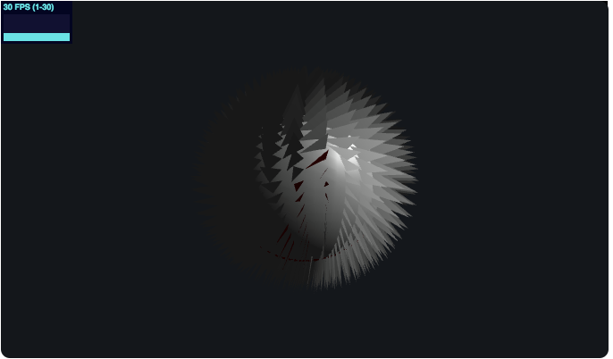
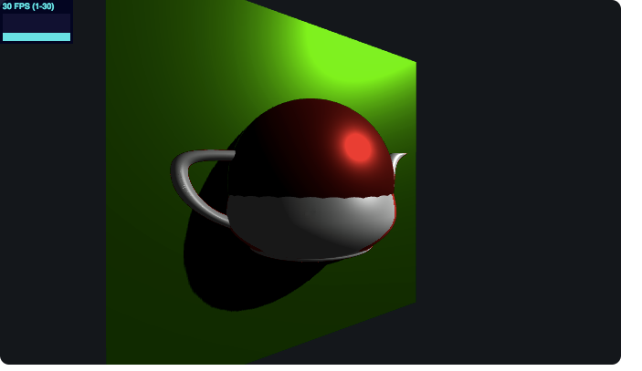

So far we've implemented a basic cel shader and have played around with other non-realistic shading effects. In the following section the results of the different techniques are shown. The first is the basic cel shader done in openGL where we look at the diffuse lighting intensity and break the color into discrete sections and force the color to be one of the calculated colors.
In the second shading technique a "graftal" technique is used. In this shading technique a mesh is tiled as a repeated pattern onto another element. It ideally has view-size dependence where the features are largest when viewed perpendicularly and smallest when viewed head on.
The last shading technique that we got to was shadow mapping. Most of the code for shadow maping is already covered in three.js. Shadow mapping is a method to create dynamic shadows, meaning the shadows darkness, direction, and length change depending on variables such as camera angle and position, object position and light angle, position, and intensity. In the third photo we can see red silhouettes around the pot, showing a silhouetting algorithm. Silhouetting is done by clamping if the cross product of the normal and the camera view vector is greater than a predetermined number.
Cel Shader
Graftal Shading Technique
Shadoing Mapping + Silhouetting Algorithm
Cel shading seems to be a popular topic and there are many tutorials for it on the internet. The code needed for cel shading is also relatively simple and short. Because of the amount of resources available on the topic already we explored other shading experiments, the graftal technique as explained above and shadow mapping.
Because we are slightly ahead of schedule we can begin work on what we listed in the "what we hope to accomplish" section of the project proposal. In our case, we are interested in cel-shading or non-realistic shading smoke, vapor, and/or clouds. There doesn't seem as many resources available for shading non-solid objects and shading these new materials will be more of a challenge.